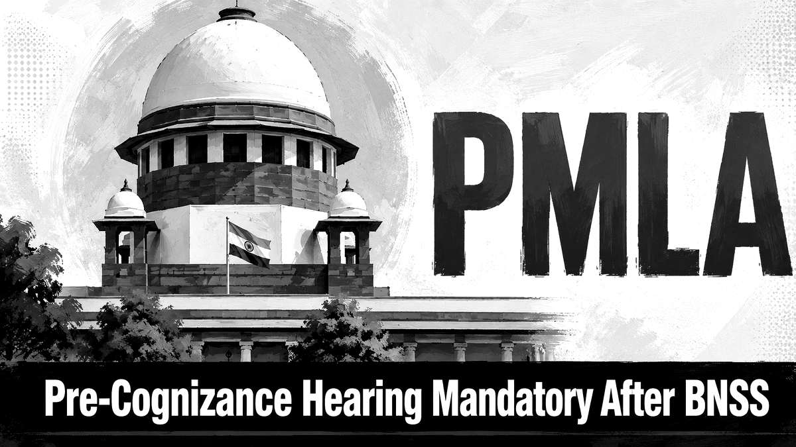

The transition from the Code of Criminal Procedure to the Bharatiya Nagarik Suraksha Sanhita has created important procedural questions for PMLA complaints, especially where cognizance is taken after BNSS came into force.

Executive Summary
- The key issue is whether a Special Court can take cognizance of a PMLA prosecution complaint after BNSS without first giving the accused an opportunity of hearing.
- Section 223 BNSS materially changes the complaint-cognizance stage by requiring that the accused be given an opportunity of being heard before cognizance is taken.
- For PMLA complaints filed by the Enforcement Directorate, the question becomes important because prosecution complaints are the usual route for trial before the Special Court.
- The reported Supreme Court position indicates that where cognizance is taken after BNSS came into force, the pre-cognizance hearing requirement cannot be ignored merely because the complaint arises under PMLA.
- This does not convert the pre-cognizance stage into a full discharge hearing; it is a limited procedural opportunity before the court decides whether to take cognizance.
Introduction
The Supreme Court's reported ruling that a pre-cognizance hearing of the accused is mandatory for a PMLA complaint where cognizance is taken after the Bharatiya Nagarik Suraksha Sanhita, 2023 came into force is a significant development in criminal procedure and economic-offences litigation. It sits at the intersection of three important legal themes: the complaint procedure under the new criminal procedure code, the special procedure under the Prevention of Money Laundering Act, 2002, and the broader principle that criminal process should not be triggered mechanically without procedural safeguards.
The issue is not merely technical. Cognizance is the point at which a criminal court applies its mind to an alleged offence and begins judicial action. In PMLA matters, the filing of a prosecution complaint by the Enforcement Directorate can lead to summons, appearance obligations, bail questions, attachment-related consequences and long-running trial exposure. If the law now requires an accused to be heard before cognizance is taken on a complaint, then the order taking cognizance becomes procedurally sensitive.
What Is Cognizance?
In criminal procedure, cognizance means the court's judicial notice of an offence for the purpose of proceeding under law. It is not the same as conviction, framing of charge or even summoning in every context. But it is the first formal stage at which the court decides that the complaint or police report discloses an offence requiring judicial process.
The distinction matters because procedural rights differ from stage to stage. A person may have one set of rights before cognizance, another at summons, another at charge, and another at trial. Under the earlier CrPC framework, complaint cognizance was often understood as an ex parte judicial step: the Magistrate could examine the complainant and witnesses, postpone issue of process, or dismiss the complaint. The accused ordinarily entered the process after summons. BNSS changes that architecture by introducing a hearing opportunity before cognizance in complaint cases.
The BNSS Shift: Section 223
Section 223 of the Bharatiya Nagarik Suraksha Sanhita, 2023 deals with examination of the complainant and cognizance on complaint. The important procedural shift is the requirement that no cognizance of an offence shall be taken by the Magistrate without giving the accused an opportunity of being heard. This is one of the major differences between the older complaint-cognizance model and the BNSS complaint procedure.
The purpose appears to be procedural fairness at the threshold. Criminal law can impose serious burdens even before trial. A pre-cognizance hearing gives the proposed accused a limited opportunity to point out why the complaint should not be entertained at all, why the court lacks jurisdiction, why mandatory statutory conditions are absent, or why the complaint is procedurally defective. It does not mean that the accused must be given a full trial before cognizance.
How PMLA Prosecution Complaints Work
Under the Prevention of Money Laundering Act, prosecution is ordinarily initiated through a complaint before the Special Court. The Enforcement Directorate investigates money-laundering allegations, provisionally attaches property where statutory conditions are satisfied, files material before the adjudicating authority for attachment confirmation, and may file a prosecution complaint before the Special Court for the offence of money laundering.
Section 44 of the PMLA deals with offences triable by Special Courts. The PMLA also contains provisions that interact with general criminal procedure. Where the special statute is silent or does not create a contrary procedure, the general procedural law may operate. That is why the BNSS transition matters. If the Special Court is taking cognizance on a complaint after BNSS came into force, it must consider whether the complaint-cognizance requirement under Section 223 applies.
Why the Timing of Cognizance Matters
The relevant trigger is not only when the Enforcement Directorate conducted investigation or when the alleged offence occurred. The crucial question is when the court takes cognizance. If cognizance was taken before BNSS came into force, the old procedural regime may govern that cognizance order. If cognizance is taken after BNSS came into force, the BNSS complaint-cognizance provision becomes central.
This timing issue can arise in pending PMLA complaints, fresh prosecution complaints, supplementary complaints and matters where the Special Court had not yet applied its mind to take cognizance. Accused persons may argue that after BNSS, the court could not have taken cognizance without hearing them first. The prosecution may respond that PMLA is a special statute, that the complaint is filed by a public authority after investigation, or that the hearing requirement should be read in a limited manner. The reported Supreme Court position gives weight to the accused's procedural-hearing argument where cognizance is taken after BNSS.
Does PMLA Override the BNSS Hearing Requirement?
A special statute can override general criminal procedure if it contains a clear inconsistent procedure. But the mere fact that PMLA is a special law does not automatically exclude every procedural safeguard under the general code. Courts usually examine whether the special law expressly or impliedly excludes the general provision, whether the two can operate together, and whether applying the general provision would frustrate the special statute.
The pre-cognizance hearing requirement can operate without destroying the PMLA framework. The Special Court can still examine the complaint, evaluate the statutory ingredients, consider the material, and decide whether cognizance should be taken. The only additional procedural step is giving the accused a limited opportunity to be heard before that decision. This is why the rule is important: it strengthens procedural fairness without necessarily weakening the statutory enforcement scheme.
Nature and Scope of the Hearing
The pre-cognizance hearing should not be confused with a discharge hearing, bail hearing or trial. It is a threshold hearing. The accused may raise objections such as lack of jurisdiction, absence of statutory sanction where required, limitation, non-compliance with mandatory procedure, absence of scheduled offence foundation, or the legal impossibility of taking cognizance on the complaint as presented.
However, the court is unlikely to conduct a detailed evidence appreciation exercise at this stage. The accused cannot demand that every prosecution document be tested as if the court were deciding guilt. The hearing should remain focused on whether the legal conditions for taking cognizance are satisfied and whether the complaint discloses a case that can move forward.
Impact on Pending PMLA Matters
The ruling may affect PMLA cases where prosecution complaints were pending before the Special Court and cognizance was taken after BNSS came into force without notice or opportunity of hearing to the proposed accused. Such accused may examine whether the cognizance order can be challenged on procedural grounds.
The consequences will depend on facts. In some cases, the defect may lead to remand for fresh consideration after hearing. In others, courts may assess whether the accused has already been heard at a later stage, whether prejudice is shown, whether the objection was raised promptly, and whether the cognizance order was otherwise sustainable. The safer prosecutorial course is to comply with the hearing requirement where the timing and statutory route attract Section 223 BNSS.
Practical Points for Defence
Defence lawyers in PMLA matters should immediately identify the date on which BNSS came into force, the date of the complaint, the date of cognizance, the text of the cognizance order and whether any pre-cognizance notice or opportunity was given. A challenge should not be drafted merely as a technical objection. It should show why the hearing requirement applies, what prejudice was caused, and what legal objections the accused would have raised had an opportunity been given.
A good challenge should be document-led. It should annex the prosecution complaint, order sheet, cognizance order, summons order, ED communications, predicate-offence records, scheduled offence status and any prior proceedings. The argument should be precise: the defect is not that the accused was not acquitted at the threshold, but that the court took cognizance without complying with the mandatory hearing step.
Practical Points for Prosecution
For the Enforcement Directorate and prosecutors, the development requires procedural discipline. If a prosecution complaint is placed before the Special Court after BNSS, it is safer to request the court to follow the BNSS complaint-cognizance process and issue appropriate pre-cognizance notice where required. The prosecution can still argue that the hearing should be narrow and should not become a mini-trial.
Prosecutors should be prepared to show that the complaint discloses the offence of money laundering, that the Special Court has jurisdiction, that the scheduled offence foundation exists, and that the materials justify cognizance. A reasoned order after hearing is likely to be more robust than a mechanical order vulnerable to challenge.
Why This Development Matters
The ruling matters because it brings threshold fairness into a serious economic-offence prosecution model. PMLA proceedings can carry heavy reputational, financial and personal consequences. A pre-cognizance hearing gives the proposed accused a chance to raise legal objections before the criminal process formally moves forward.
At the same time, the rule should not be overstated. It does not mean that every PMLA complaint will fail. It does not mean that the accused is entitled to a full-fledged merits hearing before cognizance. It does not dilute the Special Court's power to take cognizance if the complaint and material satisfy the law. The real change is procedural: the court must hear before it proceeds, where the BNSS complaint-cognizance rule applies.
Frequently Asked Questions
Is a pre-cognizance hearing mandatory for all PMLA complaints?
The issue depends on the date of cognizance and the applicable procedural route. Where cognizance on a complaint is taken after BNSS came into force and Section 223 applies, the accused must be given an opportunity of hearing before cognizance.
Does this mean the accused can argue the entire defence before cognizance?
No. The hearing is limited. It is meant to address threshold legal and procedural objections, not to conduct a full trial or detailed discharge exercise.
Can an old cognizance order be challenged under BNSS?
If cognizance was taken before BNSS came into force, the old procedural regime may apply. The strongest argument arises where cognizance was taken after BNSS without hearing.
Will this stop ED investigations?
No. The ruling concerns the court's cognizance stage on a complaint. It does not, by itself, stop investigation, attachment proceedings or lawful prosecution.
Conclusion
The reported Supreme Court position on pre-cognizance hearing in PMLA complaints after BNSS reflects a broader procedural shift in Indian criminal law. Section 223 BNSS gives the accused a threshold opportunity of being heard before cognizance is taken on a complaint. When a PMLA Special Court takes cognizance after BNSS came into force, that requirement can become decisive.
The development should be understood carefully. It is not a blanket immunity for accused persons, nor is it a full merits hearing before trial. It is a procedural safeguard. For defence lawyers, it creates an important ground to examine in post-BNSS cognizance orders. For prosecutors and Special Courts, it signals the need for careful compliance and reasoned orders. In economic-offence litigation, procedure is often the first battlefield; after BNSS, the pre-cognizance hearing may become one of its most important stages.
Last updated on: 21/05/2026 at 01:05
Useful Internal Pages
References / Sources
Primary statutory materials are listed first. Legal reporting is used for the reported Supreme Court development and should be read with the final signed order/judgment when available.
- Bharatiya Nagarik Suraksha Sanhita, 2023, especially Section 223 concerning complaint cognizance and hearing opportunity.
- Prevention of Money Laundering Act, 2002, especially Sections 44, 45 and connected provisions relating to Special Courts and PMLA prosecution complaints.
- Code of Criminal Procedure, 1973, especially the previous complaint-cognizance framework used for comparison with BNSS.
- Supreme Court of India, reported decision on pre-cognizance hearing in PMLA complaints where cognizance is taken after BNSS.
- Contemporary legal reporting on the Supreme Court's PMLA-BNSS pre-cognizance hearing ruling.